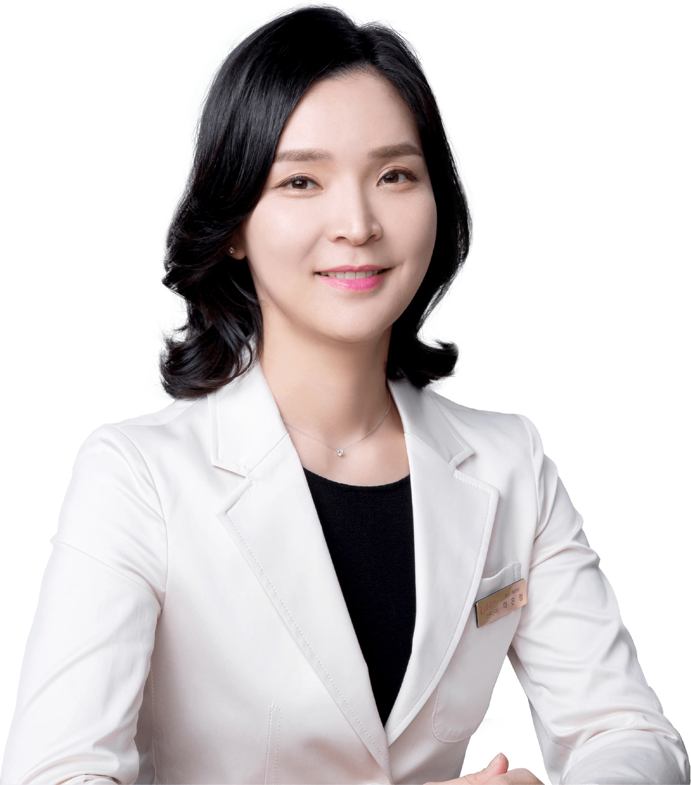
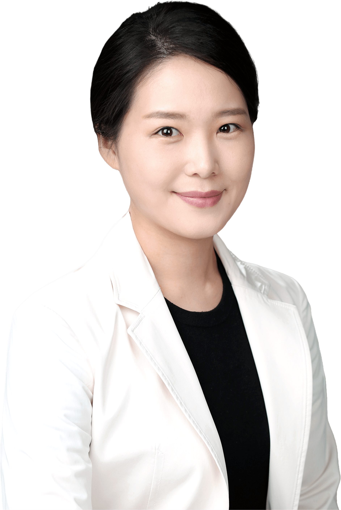
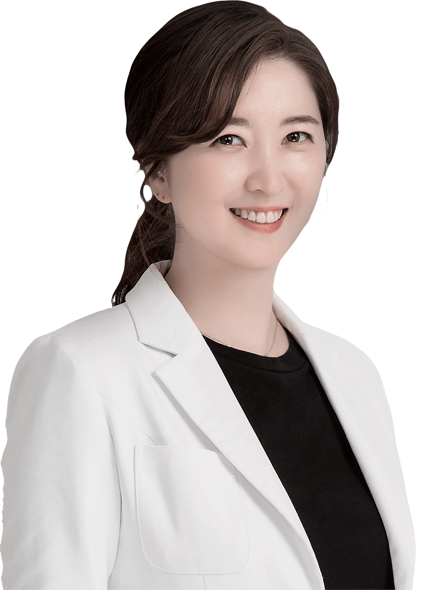
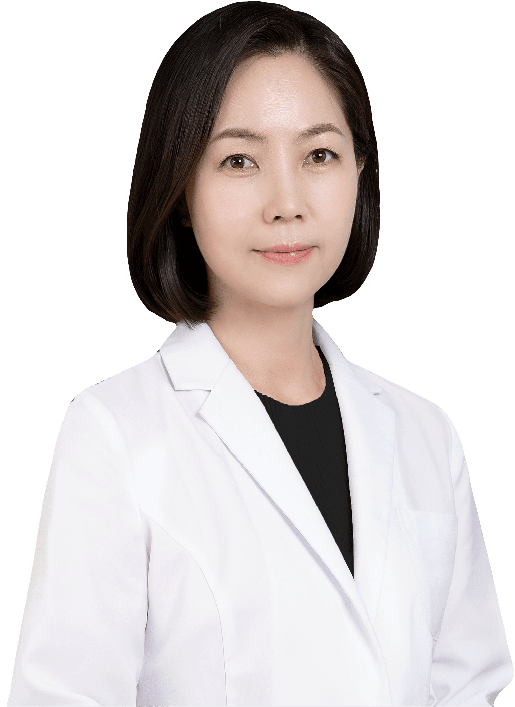
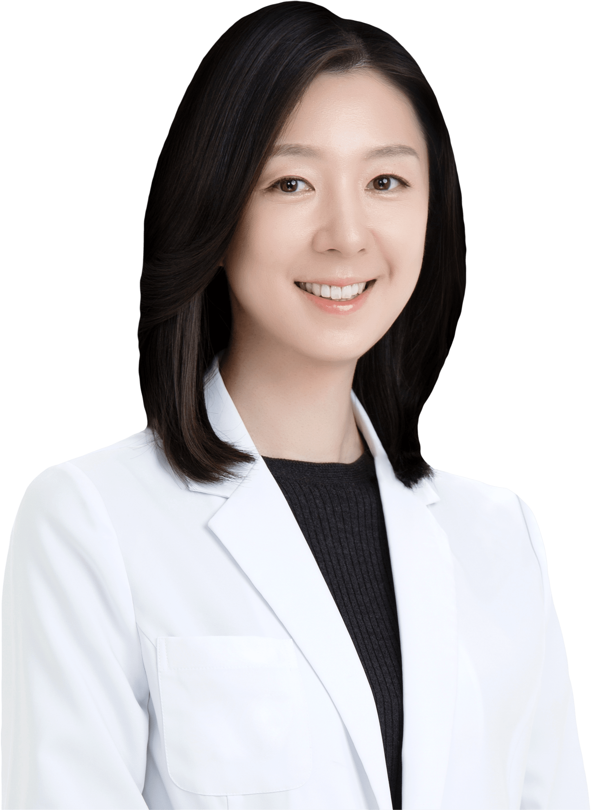
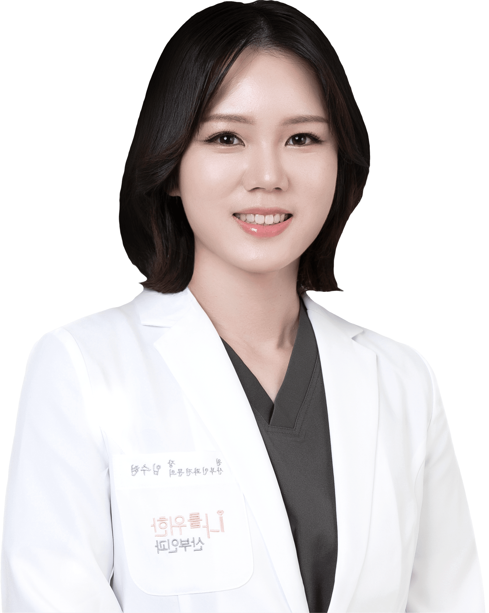
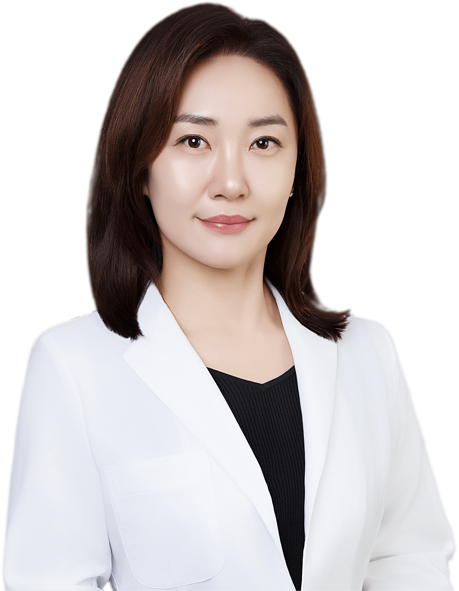

때로는 친언니 같은 ”
나를위한 산부인과에서는
여성의 사소한 고민 하나하나 진심으로 소통하고
해결해드리기 위해 최선을 다하고 있습니다.
다년간의 풍부한 수술경험과 마음까지 헤아리는
세심한 진료로 여성 모두가 건강하고 아름답게
태어나는
이곳은 나를위한 산부인과입니다.

- 이은정
- 대표 원장
- Dr. Lee
삼성서울병원 산부인과 외래교수
전 윤호 병원 산부인과 원장
전 포유문 산부인과 원장
현 나를위한 산부인과 대표원장
대한 산부인과 의사회 정회원
대한 산부인과 초음파학회 정회원
대한 여성회음성형연구회 정회원
대한 피임 생식보건학회 정회원
대한 비뇨부인과 학회 정회원
대한 모체태아의학회 정회원
대한 폐경 학회 정회원
대한 레이저 피부 모발학회 정회원
대한 비만 미용치료 학회 정회원

- 이청아
- 원장
- Dr. Lee
삼성서울병원 산부인과 전문의
삼성서울병원 산부인과 및 정일 초음파 전임의
전 모아 제일 산부인과 원장
현 나를위한 산부인과 원장
대한 산부인과학회 정회원
대한 모체태아의학회 정회원
대한 산부인과 초음파학회 정회원

- 신선아
- 원장
- Dr. Shin
서울아산병원 산부인과 전문의
서울아산병원 산부인과 외래교수
현 나를위한 산부인과 원장
대한 산부인과학회 정회원
대한 산부인과 초음파학회 정회원
대한 비뇨부인과 학회 정회원

- 정지윤
- 원장
- Dr. Jung
울산대학교 의과대학 산부인과 박사
서울아산병원 산부인과 전문의
서울아산병원 산부인과도 제 태아의학 전임의
한림대학교 병원 산부인과 부교수
건국대학교 병원 헬스케어 센터 임상교수
서울아산병원 산부인과 외래교수
전 포유문 산부인과 원장
전 신소애 산부인과 원장
현 나를위한 산부인과 원장
대한 산부인과학회 정회원
대한 산부인과 초음파학회 정회원
대한 폐경 학회 정회원

- 서지민
- 원장
- Dr. Seo
가톨릭대학교 서울성모병원 수련의
가톨릭대학교 서울성모병원 산부인과 전공의
가톨릭대학교 서울성모병원 산부인과 전문의
2019년도 우수 전공의 수상
현 나를위한 산부인과원장
대한 산부인과학회 정회원
대한 산부인과초음파학회 정회원
대한 골다공증 학회 정회원
대한 피임 생식보건학회 정회원

- 임수현
- 원장
- Dr. Lim
삼성서울병원 산부인과 전문의
삼성서울병원 산부인과 외래교수
전 김포 나리병원원장
전 삼성 조앤 여성의원 원장
현 나를위한 산부인과 원장
대한 산부인과학회 정회원
대한 산부인과 초음파학회 정회원

- 장재연
- 원장
- Dr. Jang
순천향 대학병원 인턴 및 전문의
전 루시나 산부인과 원장
전 신촌 애플 산부인과 원장
전 더드림 산부인과 원장
현 나를위한 산부인과 원장
대한 산부인과 학회 정회원
대한 산부인과 의사회 정회원
대한 산부인과 초음파학회 정회원
대한 여성 성의학회 정회원